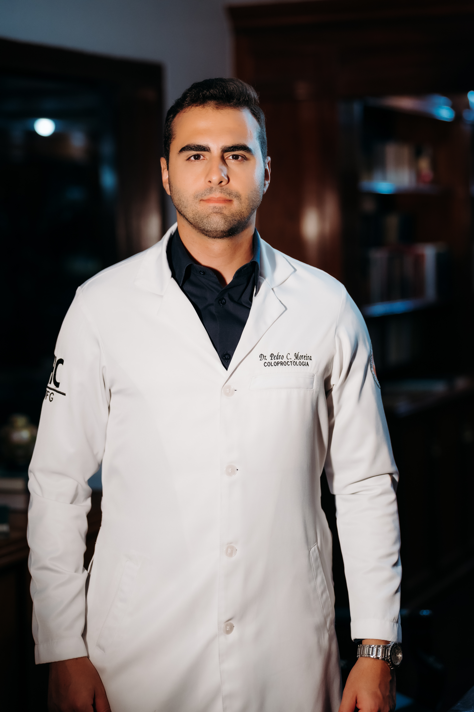

Sou médico coloproctologista, dedicado ao diagnóstico e tratamento das doenças do intestino, reto e ânus.
Acredito em uma medicina humana, onde cada paciente é ouvido de verdade. Muitas pessoas chegam ao consultório carregando medo, vergonha ou dúvidas sobre sintomas que atrapalham o dia a dia — e meu papel é justamente transformar esse desconforto em segurança, informação e tratamento correto.
Com atuação baseada em ciência, tecnologia e acompanhamento próximo, meu objetivo é garantir que você entenda o que está acontecendo com seu corpo e tenha um cuidado completo, do primeiro atendimento ao acompanhamento final.
Cuidando da sua saúde intestinal com precisão e acolhimento.
Avaliação e tratamento de alterações como pólipos, diverticulite, colites e problemas funcionais.
Abordagem especializada para fissuras, fístulas, abscessos, plicomas e hemorroidas.
Investigação, diagnóstico precoce e encaminhamento terapêutico adequado e cirurgia para tratamento do Câncer.
Rastreamento individualizado, orientações personalizadas e acompanhamento contínuo.
Avaliação da digestão, hábitos intestinais, dor abdominal, constipação e diarreia.
Precisão, tecnologia e cuidado individual.
Exames essenciais para diagnóstico precoce, investigação de sangramentos, pólipos e prevenção do câncer.
Opções modernas e eficazes — de terapias conservadoras a procedimentos minimamente invasivos.
Cuidados voltados para reduzir dor, inflamação e promover cicatrização adequada.
Procedimento seguro que devolve conforto e autoestima.
Monitoramento completo para doença de Crohn e retocolite ulcerativa.
Diagnóstico detalhado para identificar causas e direcionar o tratamento ideal.
Quando necessário, realizo procedimentos com foco em segurança, resultado e recuperação humanizada.
Tecnologia de ponta para mais conforto no pós-operatório. Técnica moderna e minimamente invasiva para tratamento de hemorroidas, fissuras e fístulas. Benefícios: menor dor, menos sangramento, recuperação mais rápida e retorno às atividades em menos tempo.
Você pode trocar por depoimentos reais depois.
"Nunca imaginei que seria tão bem atendida. O doutor explicou tudo com calma, me passou segurança e finalmente descobri o que estava acontecendo comigo."
"Cheguei com medo e vergonha, saí com clareza e tratamento certo. Atendimento humano faz toda diferença."
"Procedimento rápido, indolor e com acompanhamento impecável. Hoje tenho uma qualidade de vida que achei que nunca mais teria."
Especialização: Hospital das Clínicas - UFG, com aperfeiçoamento internacional nos EUA.
Consultas com tempo adequado para ouvir, examinar e explicar cada detalhe.
Equipamentos modernos para diagnósticos precisos e tratamentos eficazes.
Participação em congressos nacionais e internacionais, sempre atualizado.
Consultório de fácil acesso, próximo ao metrô e com estacionamento
Av. Portugal, Nº 1148, Sala B-3802
Ed. Órion Business - St. Marista
Goiânia - GO, CEP: 74150-030
Segunda a Sexta: 08h às 18h
Sábado e Domingo: Fechado
WhatsApp: (62) 99600-6080
Tire suas principais dúvidas sobre nosso atendimento
No momento, o atendimento é realizado apenas de forma particular. Porém, fornecemos toda a documentação necessária para que você possa solicitar o reembolso junto ao seu plano de saúde.
O agendamento é feito exclusivamente pelo WhatsApp. Buscamos agendar sua consulta no horário mais conveniente para você, com atendimento de segunda a sexta-feira, das 08h às 18h.
As consultas têm duração de 30 minutos a 1 hora. Acreditamos que é fundamental ter tempo adequado para ouvir o paciente, realizar um exame físico completo e esclarecer todas as dúvidas.
Sim, a colonoscopia exige uma dieta específica e uso de laxantes no dia anterior ao exame. Todas as orientações serão fornecidas detalhadamente no momento do agendamento.
A recomendação é iniciar o rastreamento a partir dos 45 anos. A frequência de repetição dependerá do resultado da última colonoscopia, podendo variar de 1 ano até 10 anos.
Não deixe para depois o cuidado com sua saúde intestinal. Entre em contato e agende sua avaliação com um especialista.
Falar com o ConsultórioAtendimento rápido • Horários flexíveis • Resposta em até 2 horas